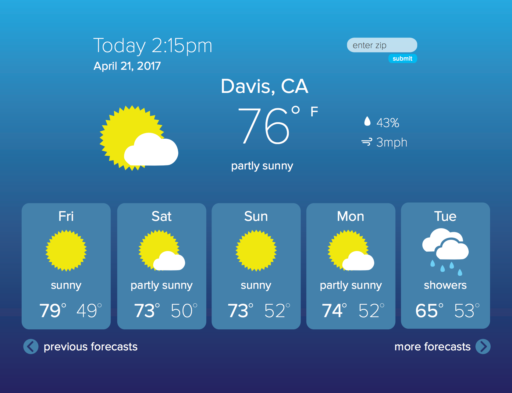
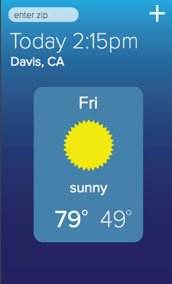

Weather APP
Technology: Javascript, HTML, CSS
Here is the link of my weather app:
My Weather APP
In this project I use the Yahoo weather API to make a weather widget. By default, you can see the 5-day weather forecast for Davis. And you can entern any zip code to get the city weather you want. Also you can use the move button to see the near ten days weather.
More details about this project:
- Pushing the arrow on the right moves all the days one over to the left, so that today disappears and we see the five days following today. A left arrow should appear to let the user shift back, as well.
- We have ten days of forecast total, so after pushing the right arrow five times, the right arrow should disappear, leaving the left arrow.
- Entering a place name or a zip code in the box at the bottom should either switch to showing the weather for that place, or leave the display the same an put up a message saying the place was not found.
Now I will Show you some images for the APP
Here is for the normal view
Here is for the mobile view
